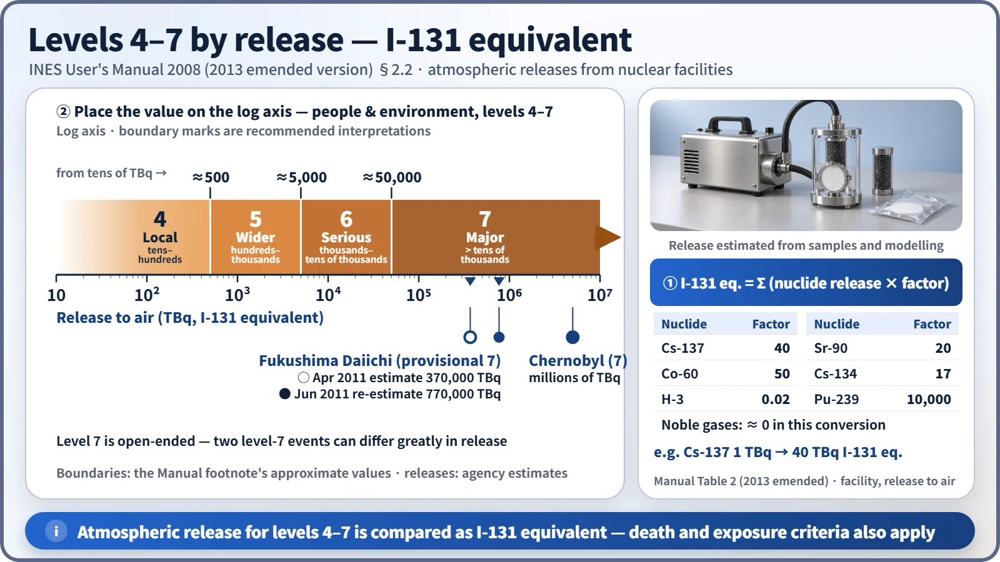
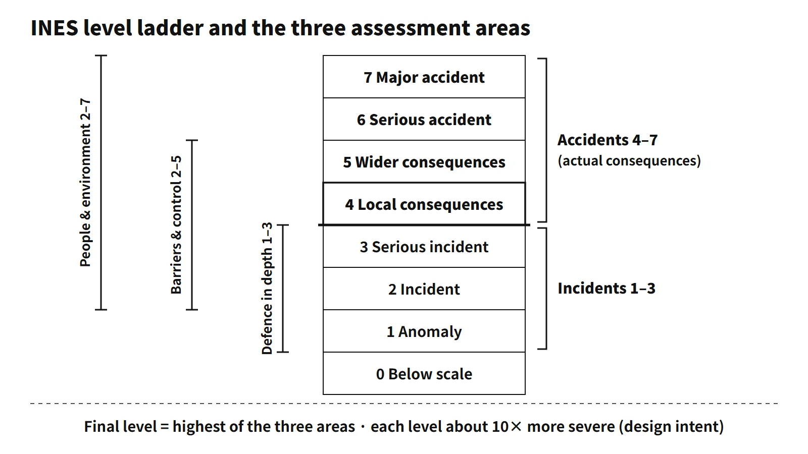

Accidents, Safety Analysis & Severe Accidents · C-SA-016
International Nuclear and Radiological Event Scale (INES) — Levels 0–7, Rated in Three Areas, Highest Value Wins
A logarithmic 0–7 communication scale: each event is rated in three areas and the highest level is taken.
The International Nuclear and Radiological Event Scale (INES) is a 0–7 scale for communicating the safety significance of events involving radiation sources to the public quickly and consistently. It was developed in 1990 by the IAEA and the OECD/NEA, and the current reference document is the INES User's Manual, 2008 Edition (published 2009; emended version March 2013).
In one sentence: INES is a scale for international communication that assesses an event in three areas — people and environment, radiological barriers and control, and defence in depth — and assigns the highest of the three levels; levels 1–3 are incidents and levels 4–7 are accidents.
Principle and mechanism
The levels and the logarithmic design
| Level | Name | Category |
|---|---|---|
| 7 | Major accident | Accident |
| 6 | Serious accident | Accident |
| 5 | Accident with wider consequences | Accident |
| 4 | Accident with local consequences | Accident |
| 3 | Serious incident | Incident |
| 2 | Incident | Incident |
| 1 | Anomaly | Incident |
| 0 | Below scale | — |
Levels 1–3 are incidents and levels 4–7 are accidents. The design intent is a logarithmic scale on which severity rises about tenfold with each level. Industrial-safety accidents such as electric shock or falls, security events and medical exposures of patients are outside its scope.
Three assessment areas and the highest-value rule
- People and environment: actual exposures and releases. Levels 4–7 are judged by the amount released; below that, by individual dose and the number of people exposed. A public effective dose above 10 mSv or a worker exceeding the annual dose limit is at least level 2; more than 10 times the worker annual limit, or a non-lethal deterministic effect (including a likely one), is at least level 3; a radiation death is at least level 4.
- Radiological barriers and control: applies only to large facilities whose site boundary is fixed in the licence. Release from the fuel assemblies of more than about 0.1 % of the core inventory is level 4; melting of, or release from the assemblies of, a few per cent or more of the core is level 5. A gamma + neutron dose rate (at 1 m from the source) above 50 mSv/h in an operating area that needs no special access permit is level 2; above 1 Sv/h it is level 3.
- Defence in depth: events with no actual consequences in which safety provisions did not perform as expected. Defence-in-depth criteria alone give at most level 3, and additional factors such as common-cause failure, procedural problems or safety culture can raise the level by one where warranted (cap 3, no double counting).
The final level is the highest of the levels obtained in the three areas. Level 1 covers only defence-in-depth degradation, and levels 4–7 can be reached only with actual consequences.
![Matrix of INES levels 0 to 7 against the three assessment areas: people and environment with release bands from tens of TBq up to more than several tens of thousands of TBq and dose criteria of 10 mSv and ten times the worker limit; radiological barriers and control with 0.1 percent and a few percent core inventory, 50 mSv/h and 1 Sv/h; defence in depth limited to levels 1 to 3 with a hatched cap at 3; examples Chernobyl, Kyshtym, TMI-2 and Vandellos; and an example where areas rated 2, 3 and 1 give a final level 3](../../assets/images/concepts/c-sa-016-ines-event-scale/fig1-ines-matrix.webp)
Release criteria — I-131 equivalent
For atmospheric releases from nuclear facilities, levels 4–7 are judged not by dose but by the release converted to I-131 equivalent, in TBq (the death and exposure criteria also apply separately). The reason is that in a large release, successful protective actions such as evacuation keep the actual dose from growing in proportion to the release. The Manual (Section 2.2) defines:
- Level 4: of the order of tens to hundreds of TBq (protective actions other than local food controls generally not needed)
- Level 5: of the order of hundreds to thousands of TBq
- Level 6: of the order of thousands to tens of thousands of TBq
- Level 7: more than several tens of thousands of TBq
Early estimates are necessarily approximate, so the definitions avoid precise values. Instead, a footnote recommends interpreting the boundaries as roughly 500, 5,000 and 50,000 TBq. The conversion multiplies each nuclide's release by the factor in Manual Table 2 and sums the results. Representative factors: Cs-137 40, Sr-90 20, Co-60 50, Cs-134 17 (2013 emended version; 3 in the 2009 printing), H-3 0.02, Pu-239 10,000. Noble gases are effectively set to zero in this conversion. Transport and radiation-source events are judged by multiples of the D2 value.

Defence in depth — initiating-event frequency categories
For reactors at power (including hot shutdown and start-up), the defence-in-depth assessment sets a base level from the combination of initiating-event frequency and operability of the safety functions (Manual Section 5). The frequency used is the one assumed in that plant's safety case.
| Category | Definition | Frequency |
|---|---|---|
| Expected | Expected to occur one or more times during the plant lifetime | > 10⁻²/yr |
| Possible | Not expected, but probability of occurrence during the lifetime greater than about 1 % | 10⁻⁴ – 10⁻²/yr |
| Unlikely | Considered in the design but rarer | ≤ 10⁻⁴/yr |
| Beyond design | Very low frequency, not normally included in the safety analysis | — |
If an initiating event actually occurred, Table 9 is used. Even with full safety functions the result is 0 for expected, 1 for possible and 2 for unlikely initiators (the initiator was not prevented). If only a degradation of function was found, with no initiating event, Table 10 is used: if the operational limits and conditions (OL&C) of the technical specifications are met the level is 0, and if the function is inadequate it is 3 for expected, 2 for possible and 1 for unlikely initiators. For example, discovering during power operation that all emergency diesel generators had been unavailable for a month could be level 3 if no alternative equipment was available.
What it means in a plant
- Provisional and final rating: an early rating is often provisional, because the facts are still incomplete; it is confirmed or revised to a final level once the event has been analysed (Manual 1.6.2). The rating is an after-the-fact communication tool, not an operating or response criterion.
- International notification: the Manual recommends that events of level 2 or above, or of international interest, be notified to the IAEA within 24 hours where possible. Notification goes through the IAEA's INES information system (NEWS).
- Events during start-up: an event during start-up, such as an inadvertent containment spray actuation, is assessed under Section 5 of the Manual, the same as power operation. The assessment looks in turn at whether an initiating event actually occurred, the operability of the affected safety functions, and additional factors (procedures, safety culture).
- Older terminology: the 2001 edition's "off-site / on-site impact" was reorganized in the 2008 edition into "people and environment" and "radiological barriers and control" (worker dose moved to people and environment). Some national report forms still use the older terms.
Reference document and editions
- IAEA·OECD/NEA, INES User's Manual 2008 Edition (2009; emended March 2013): supersedes the 2001 edition and others. The scale began in 1990 for nuclear facilities, was extended in 1992 to radioactive material and transport events, and the 2008 edition integrated the guidance for radiation sources and transport.
Easily confused pairs
| INES level | Emergency classification | |
|---|---|---|
| Purpose | Communicating the safety significance of an event to the public | Activating the response organization and public protection while an accident is in progress |
| Timing | After-the-fact assessment (early provisional → final) | Declared immediately by the licensee while the event is in progress, using emergency action levels (EALs) |
| Basis | Actual consequences and defence-in-depth degradation | Plant condition and expected extent of impact |
The Manual states explicitly that INES does not replace national emergency response criteria and that it is inappropriate to use it to compare safety performance between facilities or countries.
Representative cases
| Level | Case (Manual Table 12 and others) | Area |
|---|---|---|
| 7 | Chernobyl (1986) | People and environment — release of a large fraction of the core inventory |
| 7 | Fukushima Daiichi Units 1–3 (2011, provisional) | People and environment — I-131 equivalent estimated at 370,000–630,000 TBq (April 2011), re-estimated at about 770,000 (June 2011) |
| 6 | Kyshtym (1957) | People and environment — release from a high-level liquid waste tank explosion |
| 5 | TMI-2 (1979) | Barriers and control — severe core damage |
| 3 | Vandellòs (1989) | Defence in depth — loss of safety systems due to fire |
TMI-2's level 5 rests on core damage, not on the amount released. For Fukushima, on 12 April 2011 Japan's Nuclear and Industrial Safety Agency raised Units 1–3, taken together, to a provisional level 7 (Unit 4 level 3).
Key points at a glance
- Definition: a scale for communicating the safety significance of radiation-related events to the public quickly and consistently; developed by the IAEA and OECD/NEA in 1990; current 2008 Edition User's Manual.
- Levels: 0 (below scale); 1–3 incidents (anomaly, incident, serious incident); 4–7 accidents (local and wider consequences, serious, major). One level ≈ 10× (logarithmic).
- Three assessment areas: ① people and environment (release, dose); ② radiological barriers and control (core damage, on-site contamination and dose rate); ③ defence in depth (degraded safety provisions).
- Final level: the highest of the three areas.
- Defence in depth capped at 3; additional factors (common-cause failure, procedures, safety culture) can add +1.
- Release criteria: I-131 equivalent TBq, boundaries about 500 / 5,000 / 50,000 TBq (Cs-137 × 40).
- Frequency categories: expected (> 10⁻²/yr), possible (10⁻⁴–10⁻²), unlikely (≤ 10⁻⁴), beyond design. "Unlikely" means considered in the design but with low likelihood — not "impossible".
- Rating process: early provisional level → final level after analysis; level 2 and above notified to the IAEA (within 24 hours where possible).
- Cases: Chernobyl 7, Fukushima 7 (provisional), Kyshtym 6, TMI-2 5 (core damage).
- Caution: separate from emergency classification; not for comparing safety between countries or facilities.
